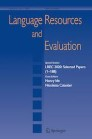
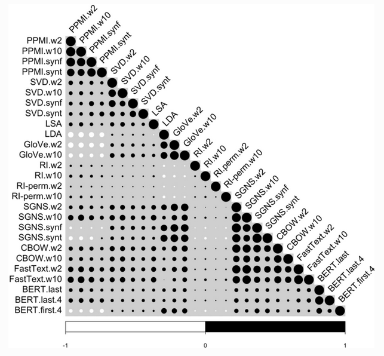

Università di Pisa (UniPi)
Lungarno Pacinotti 43, 56126 Pisa, Italia
https://www.unipi.it/
I was a postdoctoral researcher in the Computational Linguistics Laboratory (CoLing), at the Department of Philology, Literature, and Linguistics (FiLeLi) of the University of Pisa (UniPi).
Research


-
Lenci, A., Sahlgren, M., Jeuniaux, P., Cuba Gyllensten, A., & Miliani, M. (2022). A comprehensive comparative evaluation and analysis of Distributional Semantic Models. Language Resources and Evaluation, 56, 1269-1313. https://doi.org/10.1007/s10579-021-09575-z
— 16 September 2023